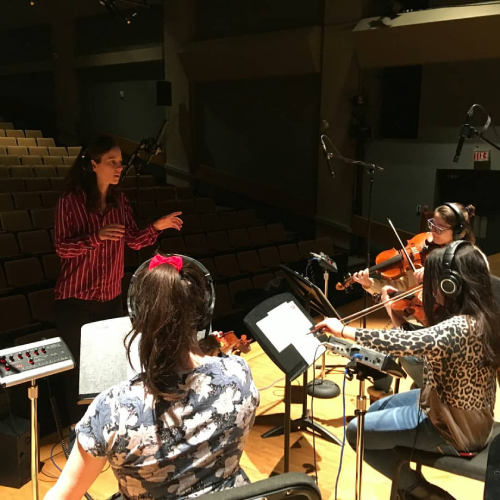
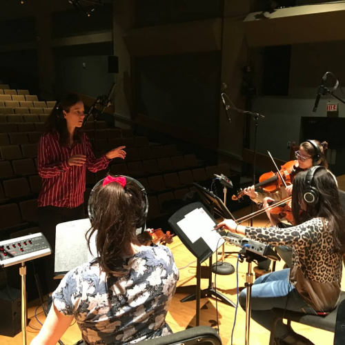

Vanille Debray
Portfolio de musique
Composition | Chanson | Piano | Voix
Pour moi, écrire de la musique, c'est comme raconter une histoire, essayer de transmettre une émotion. Je recherche sans cesse de nouvelles manières d'évoquer un sentiment, de recréer un état d'âme ou une athmosphère à travers une mélodie ou un arrangement.
Ici, vouz trouverez quelques exemples de bandes son, chansons ainsi que de mon travail d'interprète.
 
